Uso del espacio en diseño web
¿Qué es una cuadrícula?
We need to first be limited in order to become limitless.
¿Qué es una cuadrícula?
- Sistema de filas y columnas invisibles sobre las que se ubican los elementos de la página
- Esqueleto de la interfaz de usuario
Anatomía de una cuadrícula
Anatomía de una cuadrícula
Columnas
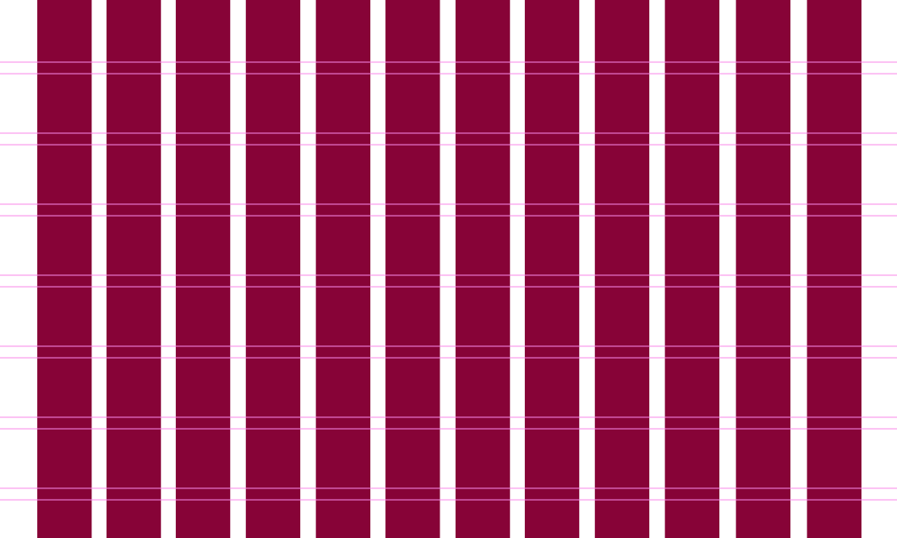Filas
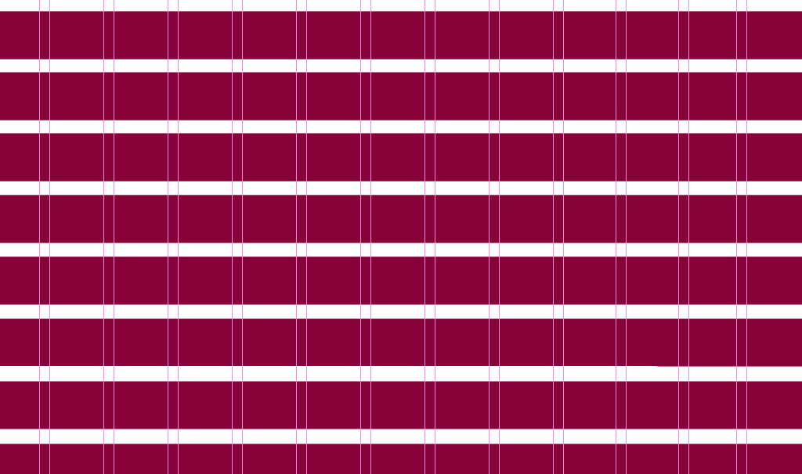Sectores
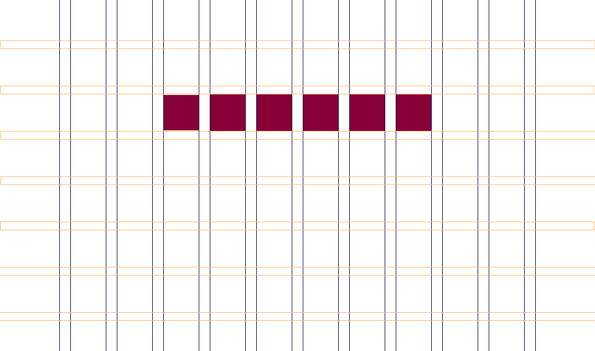Anatomía de una cuadrícula
Medianiles
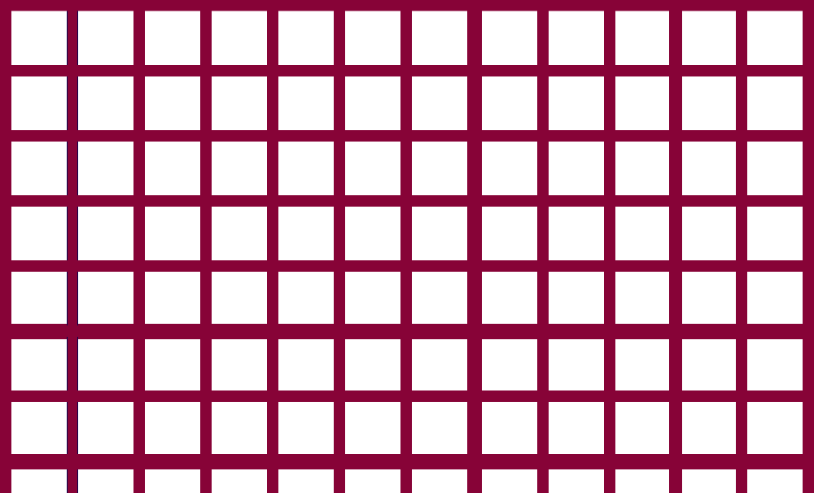Márgenes
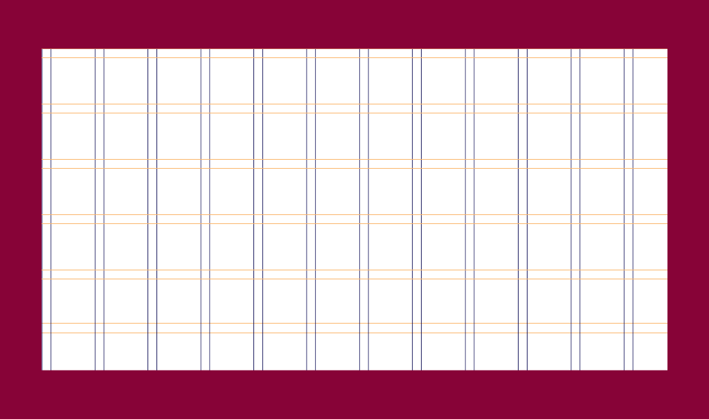Regla de los tercios
Regla de los tercios
- Divide la imagen en tercios con una cuadrícula
- Las intersecciones indican los puntos focales de la imagen
- Así, aquello que se quiera destacar en la composición se pone en las intersecciones
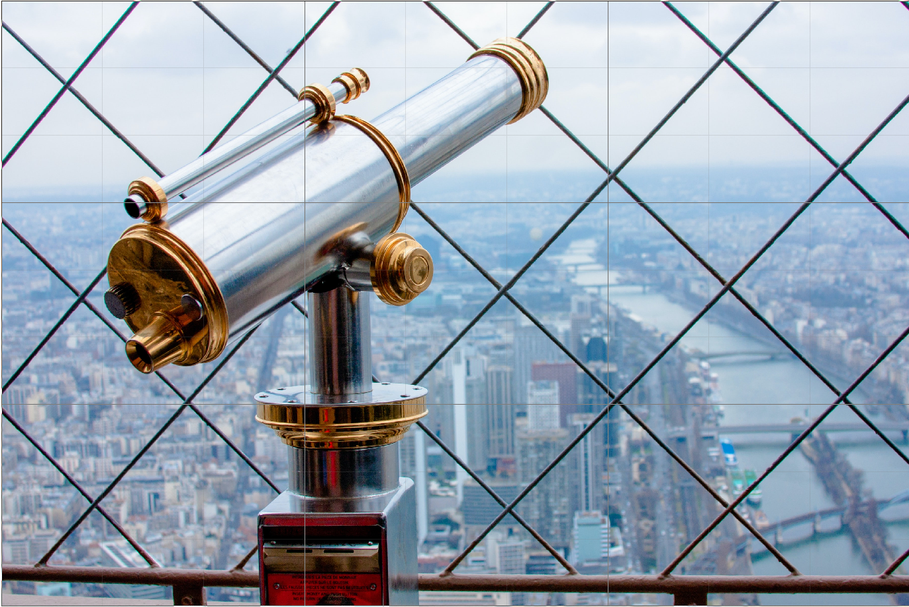
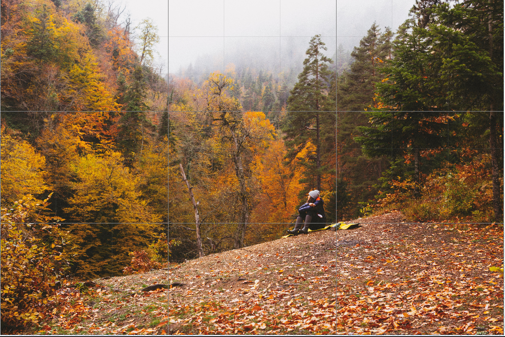 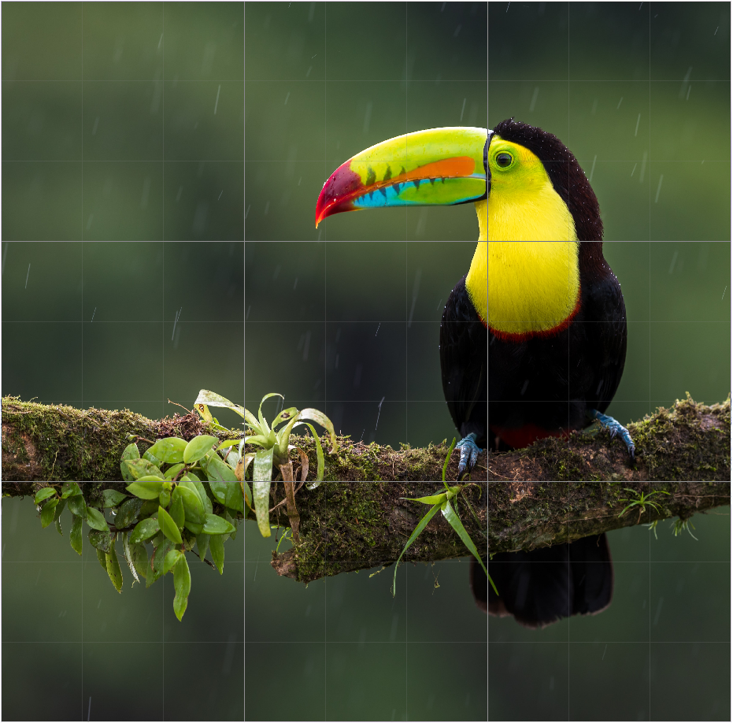
Regla de los tercios
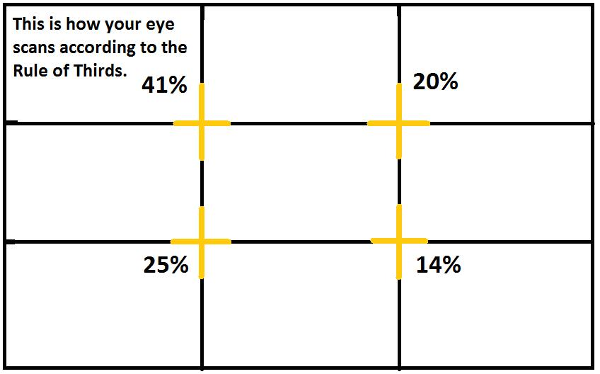
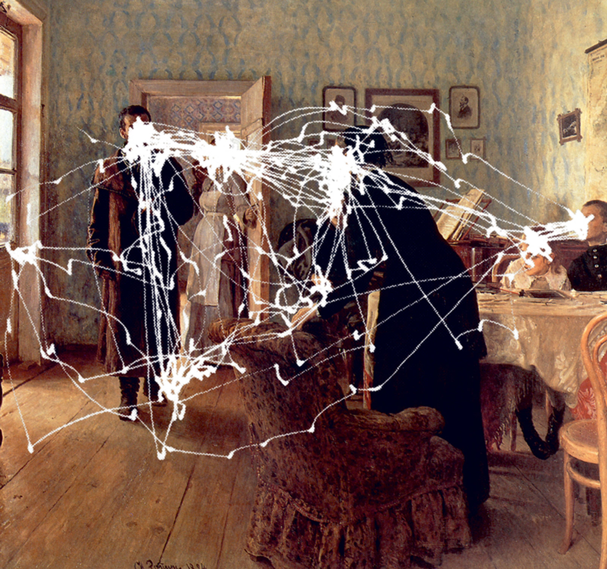
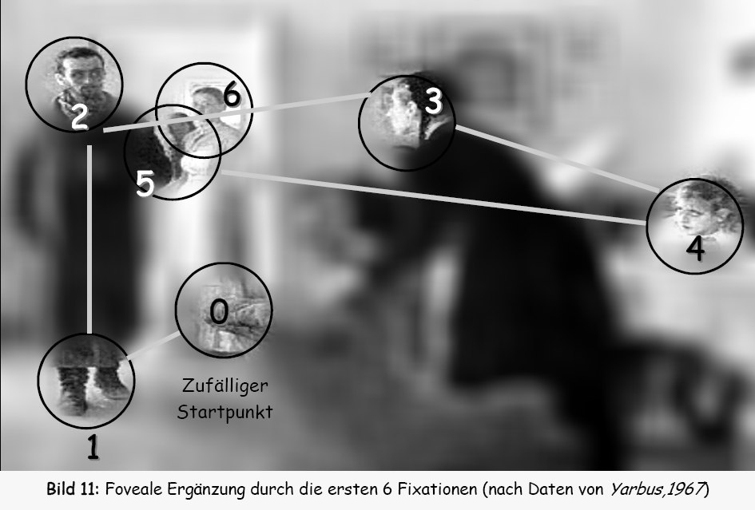
Cuadrícula de 12 unidades
Cuadrícula de 12 unidades
- Cuadrícula común a muchos sistemas de diseño por su versatilidad.
- Se adapta a disposiciones de dos, tres, cuatro o seis columnas fácilmente.
Cuadrícula de 12 unidades
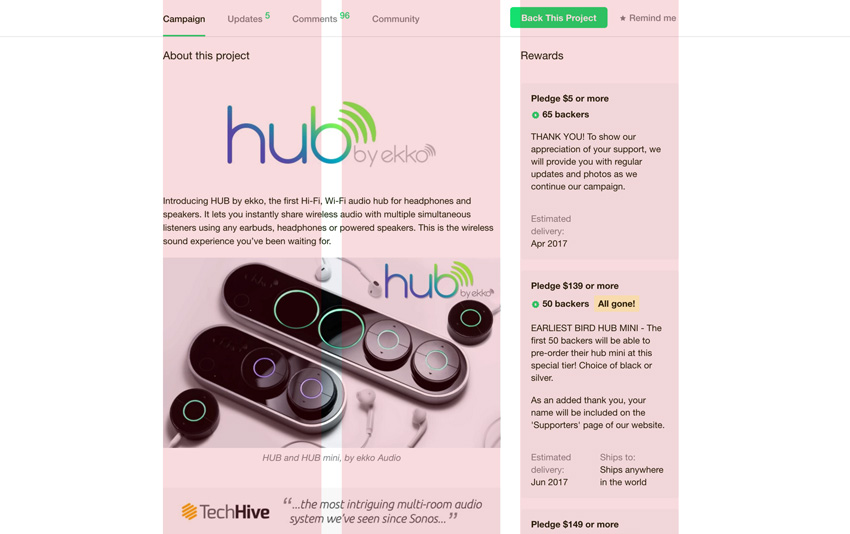
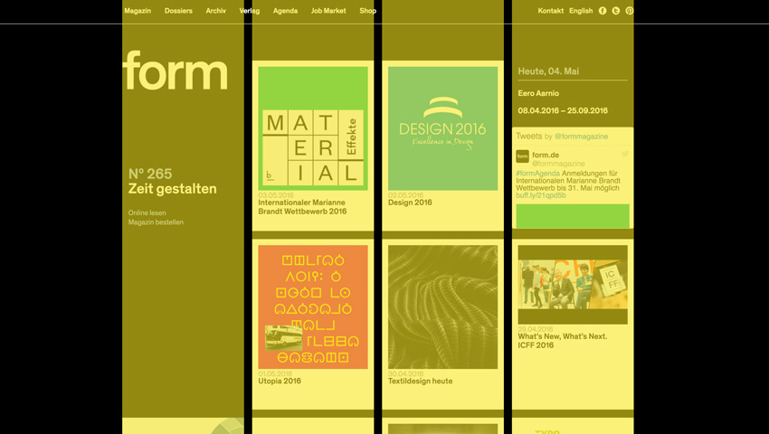
Cuadrícula de 12 unidades
 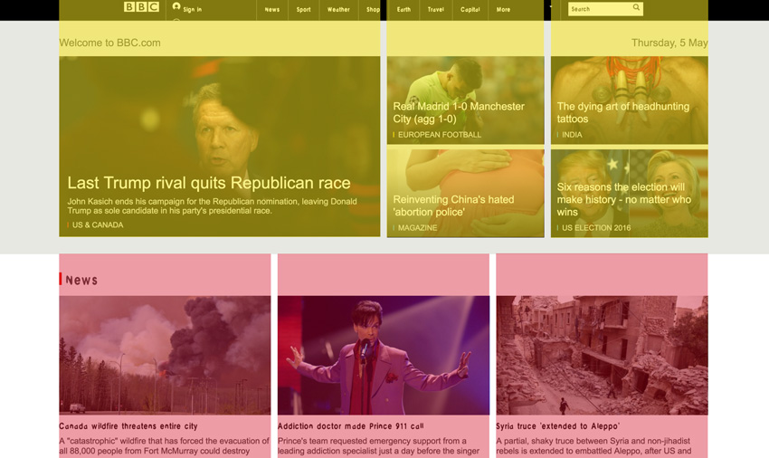
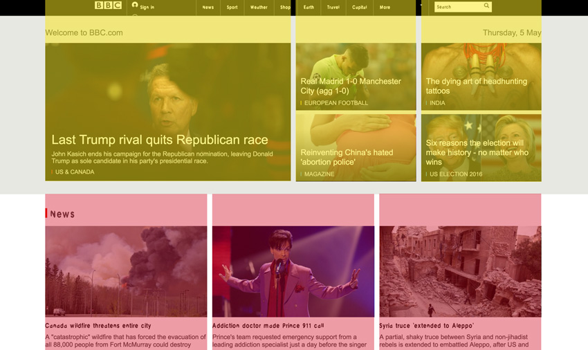
Mapa mental. Ofrecimientos (affordances)
[An affordance is] a relationship between an organism and the environment that signals an opportunity for or inhibition of action.
Mapa mental. Ofrecimientos (affordances)
Layouts comunes
Bloque
- Layout se lee de arriba abajo
- Artículos de prensa, blogs...
Columnas
- La simetría hace que se interpreten todas las columnas como de igual importancia
- Planes de pago...
Modular
- Útiles cuando hay muchos elementos que presentar
- Módulos de estructura idéntica que se repiten
- E-commerce, dashboards...
Modular jerárquico
- El cambio de tamaño de los módulos permite hacer énfasis donde es necesario